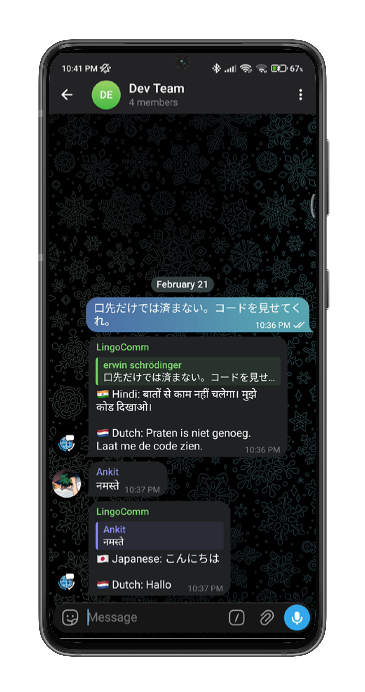

Lingo.dev × Telegram
Break language
barriers in your
Telegram groups
Real-time translation for every message. Each member sees conversations in their preferred language. No setup, no friction.
—
Translations
—
Users
25+
Languages

Features
Everything you need.
Real-Time Translation
Messages translated instantly to all member languages. One API call, multiple translations.
Language Lock
Set your language once with /lang. Write in any language, always see translations in your preference.
Chat Summaries
Missed the conversation? /summary translates last 24h of chat to your language.
Smart URL Handling
Links preserved during translation. Captions translated, media without captions ignored.
Admin Controls
Admin-only diagnostics, language stats, and group health checks via /debug.
25+ Languages
English, Hindi, Japanese, Spanish, Arabic, Chinese, and 20 more. Growing constantly.